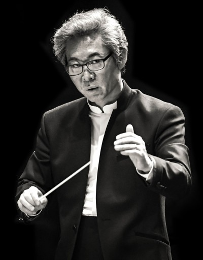

세종국악관현악단Sejong Korean Music Orchestra
031·391·8784
안녕하십니까. 세종국악관현악단 & 세종국악심포니오케스트라를 이끌고 있는 대표 김혜성입니다.
저희 세종국악관현악단은 1992년 창단 이래 한 세대에 걸쳐 한국 전통음악의 현대적 재창조를 위해 매진해 왔습니다. 세종대왕의 애민사상과 여민동락(與民同樂)의 정신을 뿌리로 삼아, 국악기와 양악기가 함께 편성된 대한민국 최초의 국악심포니오케스트라로서 새로운 음악의 지평을 열어가고 있습니다.
전통은 박제된 유산이 아닙니다. 매 시대, 그 시대를 살아가는 사람들의 호흡으로 다시 쓰여질 때 비로소 살아있는 예술이 됩니다. 저희는 전통의 올바른 보존·계승을 기본으로 삼되, 오늘을 사는 관객과 함께 호흡하는 음악 — 생활 속의 국악, 세계로 나아가는 국악, 미래를 열어가는 국악을 만들어 가고자 합니다.
여러분의 삶 속에 저희의 음악이 함께 스며들 수 있기를 진심으로 바랍니다.

樂 指
指